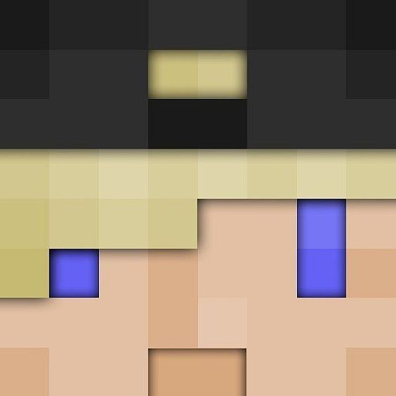
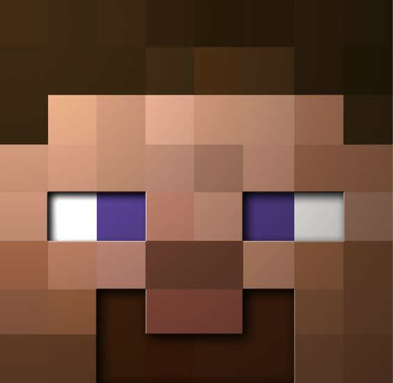

Наш проект включает в себя ряд уникальных серверов на разных версиях майнкрафта (1.7.10 и 1.10).
Для любителей модов есть сервера FTB modded - выживания на ультра-модированных (более 100 модов в каждой!) сборках FTB! Сборки отличаются кастомными рецептами, редкими модами, а так же высокой сложностью. Сейчас мы поддерживаем модпаки SkyFactory3, FTB Beyond, DireWolf20 и ResonantRise.
Вход с Twitch-лаунчера, по адресу fdworlds.com. Для игры требуется лицензионный аккаунт! А так же мощный комп, т.к. сборки требуют 4Гб оперативной памяти для майнкрафта.
Еще один сервер с модами - FDW Magic. Теплый ламповый маджик-сервер в стим-панк атмосфере с привычными модами типа Таумкрафта и Ботании, но так же с массой аддонов, парой технических модов, а главное - кастомными рецептами. Это необычным образом меняет геймплей, заставляя вас развиваться сразу в нескольких направлениях.
На сервер почти нет запретов, моды избавлены от популярных багов.